Продакт
Обсуждали цели и гипотезы
Поиск, выбор и сохранение пунктов приёма вещей в избранное

306K
Загрузок точек в день
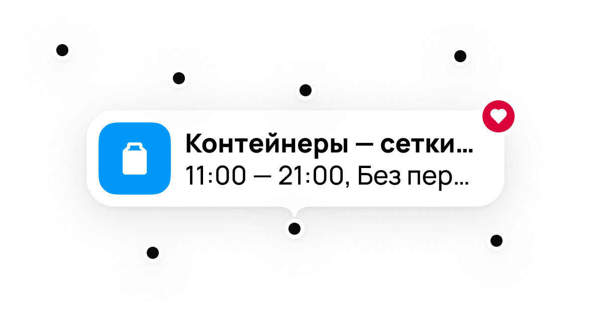
1,5–3K
Открытий карточки
пункта в день
До 70
Сохранений точек в избранное в день


Карта помогает найти, куда сдать вторсырьё и вещи на благотворительность, а точки на ней поставляют партнёрские организации
Человек приходил сдать вещи и уходил, не узнав об остальных способах помочь, переходов в соседние инициативы было единицы в день
Продакт поставил задачу перестать терять на карте человека. Успехом считали возвраты на карту и переходы в другие инициативы благотворительности, но замерить получилось только возвраты.
Тысячи адресов с разным качеством описаний, править описания на нашей стороне нельзя, улучшать можно было только интерфейс
Разработка длилась три месяца от постановки задачи до запуска. Общались всей командой. Нажми, чтобы познакомиться со всеми.
Обсуждали цели и гипотезы
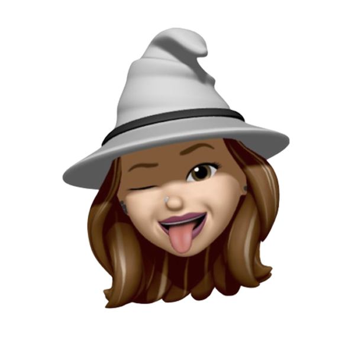
Согласовывали концепты

Продумывали логику

Проводили дизайн ревью

Вместе обсуждали формулировки
Выступала в роли продуктового дизайнера. Отвечала за весь сценарий.
навигацию, поиск, фильтры
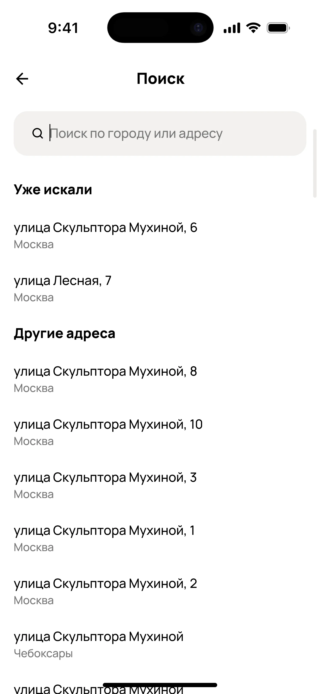
избранное
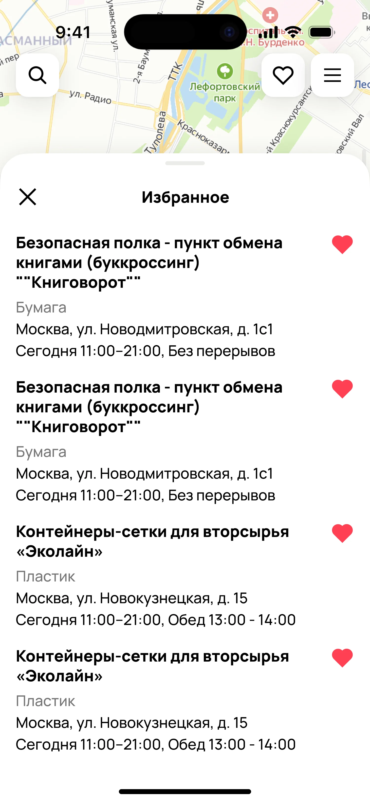
карточку пункта

Найти пункт
Использовать фильтры
Проверить условия
Сдать вещи
Сценарий рвался в трёх местах
Карта не была связана с остальной благотворительностью: переходов в другие инициативы — единицы в день
Фильтры в изначальном виде выглядели как неактивные и люди писали в поддержку, что фильтры недоступны, хотя кликабельны
Сохранить найденный пункт было нельзя. Между визитами проходят недели, и человек искал заново
Рассматривала карты бигтехов: Яндекс, 2ГИС, Google Карты. Также накидывала красивых дриббл-шотов, чтобы найти вдохновение.

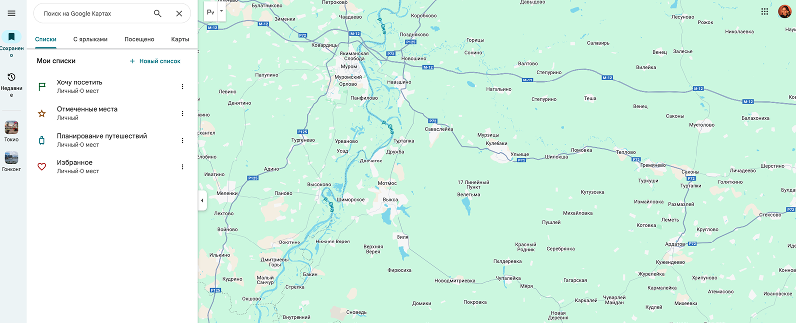
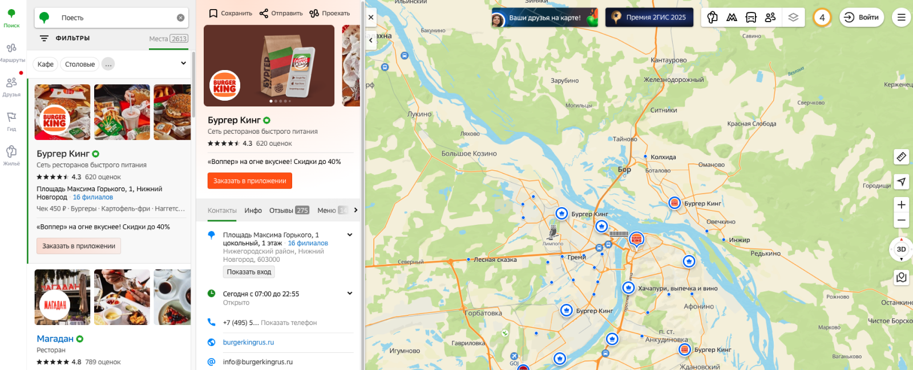
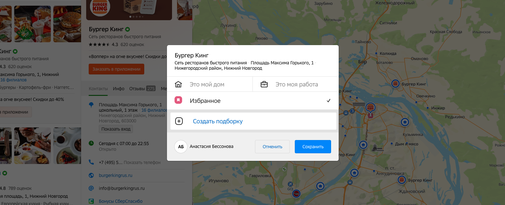
Человек попадал на карту и оставался в ней: вернуться к другим инициативам было неоткуда.

До

После
Добавила общую навигацию пространства благотворительности и согласовала её поведение с соседними командами — на карте и на остальных страницах она работает одинаково.
Категории и пины были нарисованы вне дизайн-системы, состояния фильтров не читались.
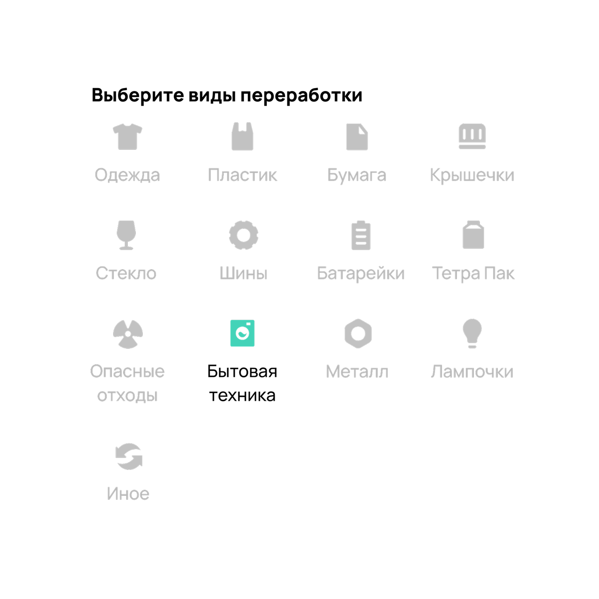
До
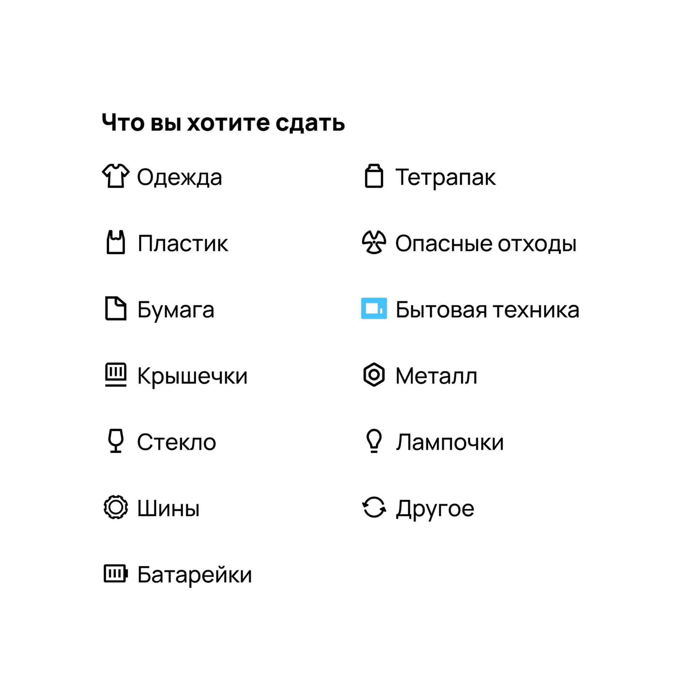
После
Привела категории и пины к дизайн-системе Авито: категорийных пинов и фильтра с множественным выбором в ней не было, их пришлось спроектировать и внести в систему.
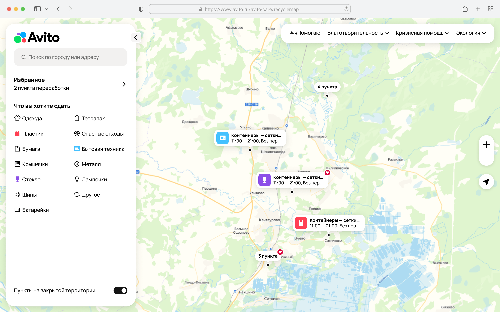
Адрес, условия приёма, режим работы и контакты лежали в карточке одним весом — понять, подходит ли пункт, было долго. Сохранить его было нельзя.
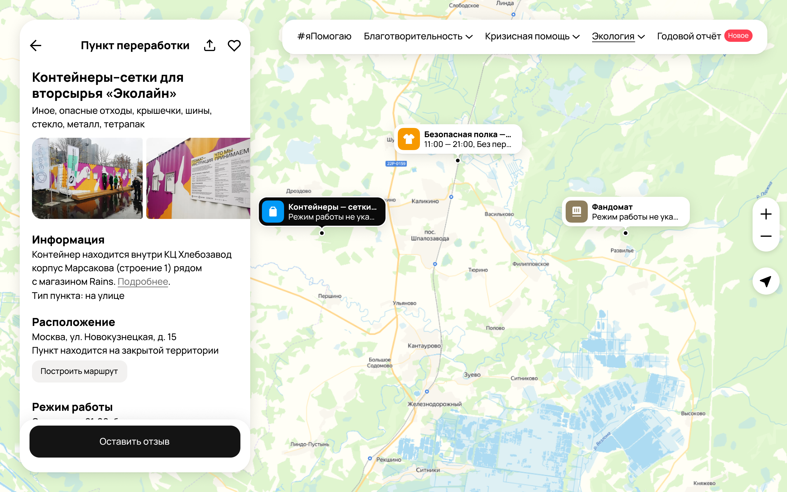
Перегруппировала карточку по задачам: где это, что примут, когда открыто, как связаться.
Унифицировала типографику, ссылки и состояния. Спроектировала сохранение пункта и список избранного.
Развернула режим работы в подробный график — из-за неточного времени чаще всего ездят зря.


Рассматривала флаг «сохранено» внутри карточки: дешевле и не добавляет новой сущности. Выбрала отдельный список.


Флаг помечает пункт, но не помогает к нему вернуться: человек, который сдаёт вещи раз в месяц, не помнит, где эта точка на карте. Ему нужен не признак, а место, куда можно прийти. Список стоил дороже, но без него сценарий возврата не закрывался.
Проверить этот выбор можно только данными — он первый в плане замеров.
Раскатывали на всех сразу, без А/Б-теста, поэтому приписывать редизайну весь трафик карты я не могу. По данным:
306K
Загрузок точек в день
1,5–3K
Открытий карточки
пункта в день
До 70
Сохранений точек в избранное в день
Эти числа говорят, что картой пользуются регулярно, а не разово. Что это следствие именно редизайна — не говорят: для такого вывода нужен замер, которого у нас не было.